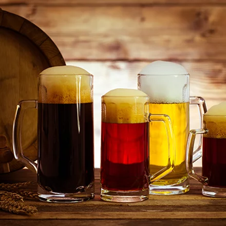
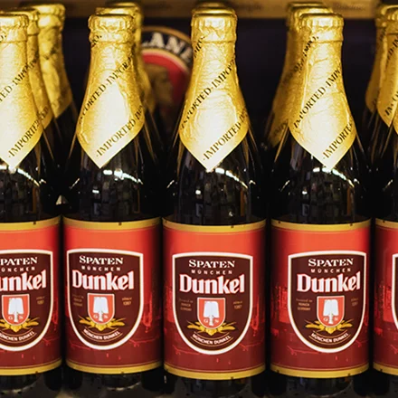
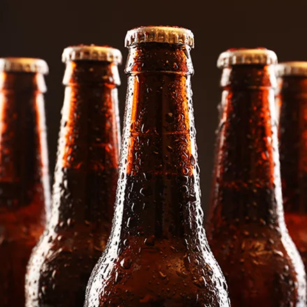
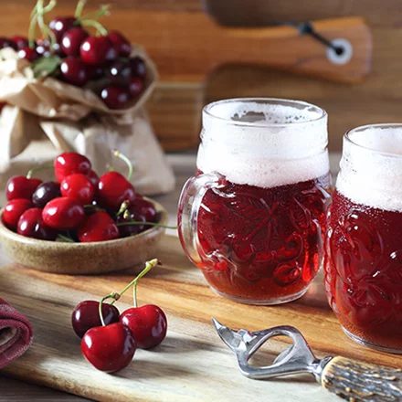

Pilsner Urquell
Чеське пиво, рецептуру якого розробив ще в 1842 році німець Йозеф Гролл. В основу входять три класичні інгредієнти: джерельна вода, солод та жатецький хміль із низьким вмістом альфа-кислот.
Особливість пінного ― багатий солодовий смак і благородна гіркота. Вишуканий хмільний аромат та інтенсивний смак досягаються і завдяки унікальній технології пивоваріння, заснованій на потрійному виварюванні сусла.
Bock
Німецьке пиво тривалого відстоювання, з вираженим солодовим присмаком. Міцність висока ― 6–17%. Для приготування лагера виробники використовують дріжджі низового бродіння, які працюють тільки при низькій температурі +8 °C. Крім традиційного пива Bock світло-бурштинового кольору, міцністю 6%, виробники випускають ще кілька видів:
- Maibock. Світлий лагер міцністю до 7,4%. Особливості смаку — виражена гірчинка та прянощі.
- Doppelbock. «Подвійний козел», у складі якого 7–12% алкоголю. Поєднує міцність та солодкість. У келиху утворює піну кремового кольору.
- Eisbock. Найбільш міцний вид пива темно-коричневого кольору з насиченим ароматом.
Пиво Bock добре поєднується з м’ясними стравами, рагу, рибою та сиром.
Dunkel
Входить у кращі сорти баварського пива низового бродіння з ячмінного солоду, хмелю та води. Міцність середня, від 4,5% до 6%. У перекладі означає «темний», хоча буває і бурштинового відтінку, і червоно-коричневого.
У процесі виготовлення лагера використовується непряме обсмажування солоду потоком гарячого повітря, тому Dunkel має характерний солодовий смак, без зайвої гіркоти. Іноді до основи додають інші інгредієнти, наприклад карамель.
Altbier (Альтбір)
Найстаріший сорт у світі ― попередник лагерів. Місце походження ― Дюссельдорф, столиця Рейн-Вестфалії. Альтбір — прозоре пиво з мідно-червоним відтінком та гіркувато-солодким смаком.
У ньому виразно відчуваються нотки зерна, прянощів, хліба, горіхів. Під час розливу утворює пишну стійку піну. Класичні альтбіри містять 5% алкоголю, а для їх виготовлення поєднують кілька сортів хмелю Spalt, Hallertau та інші.
Rauchbier (Раухбір)
Копчене пиво низового бродіння родом із Франконії. Незвичний присмак із димком з’являється після обробки великої кількості солоду над багаттям.
Смак лагера залежить від використовуваних дров: яблуня надає вершкового присмаку, бук ― копченостей. Ідеальна температура вживання пива становить +7 °C або +8 °C. Раухбір утворює густу шапку з піни на чверть келиха.
Stout
Якщо ви шукаєте кращі сорти пляшкового пива, то зверніть увагу на класичний ірландський ель, з пишною піною, 4,8% алкоголю та щільністю сусла 12%. Свою історію напій почав у 1755 році недалеко від Дубліна.
Його основа ― смажений ячмінь, вода з місцевих джерел та хміль. Крім того, додаються фірмові дріжджі верхового бродіння з кількох штамів (рецептура секретна). А ось процес бродіння відбувається при температурі +25 °C.
Колір напою може варіюватися від світло-золотого до вишневого, а в ароматі та смаку присутні кавові та фруктові нотки. Подають його охолодженим до +8…12 °C із морепродуктами, м’ясними стравами та закусками.
Budweiser (Бадвейзер)
Пиво двох країн ― Америки та Чехії, відрізняється за рецептурою і смаковими характеристиками.
Чеський Budweiser ― світлий лагер, який варять із ячмінного солоду з додаванням дріжджів низового
бродіння, при температурі від +7 °C до +10 °C.
Його смак — насичений солодом, щільний, збалансований. У колекції бренда Budweiser Budvar кілька
видів пінного:
- Original (5%), із хмільною гіркуватістю, нотками трави та зеленого яблука.
- Dark (4,8%), на основі паленого мюнхенського й карамельного солоду.
- Classic (4%), м’яке, зі зниженою міцністю, але з чіткими нотками хмелю.
- Strong (7,5%), з терпким та гірким присмаком.
- Free (0,5%), з легким цитрусовим ароматом та гіркуватістю.
До складу американського входить рис, а на етапі витримки виробник додає бамбукову тріску. У підсумку виходить легке та світле пиво, з освіжальною гіркуватістю. Офіційний виробник ― корпорація Anheuser-Busch InBev.
Leffe
Бельгійський сорт із багатовіковою історією. Його виробляли ще у XIII столітті ченці абатства Notre-Dame de Leffe. Крім основних інгредієнтів (хміль, солод, дріжджі), до складу входить кукурудза.
Від інших хмільних напоїв відрізняється присмаком смаженої карамелі, фруктів та пряним ароматом. Багато чоловіків віддають перевагу темному Leffe Brune, з насиченим солодовим смаком і присмаком із чорносливу, горіхів, апельсинової цедри. У Leffe Triple ви відчуєте коріандр, а у Blonde ― карамель, сухофрукти та спеції.
Lambic (Ламбік)

Ще один сорт із Бельгії, для виробництва якого використовують ячмінний солод, непророщену пшеницю та
дикі дріжджі. Процес бродіння відбувається у винних бочках та триває тиждень. Міцність хмільного
становить 2–6%.
Крім класичного ламбіка, популярні й кілька його підвидів:
- «Оуде Хейзе», з витримкою 10 років.
- «Фаро», з мінімальним вмістом цукру й алкоголю.
- Вишневий, з додаванням вишні.
- Фруктовий, із введенням фруктів, ягід.
Колір хмільного залежить від його складу, Lambic буває солом’яного та червоного відтінку. Аромат також виражений, особливо коли в основі лежать фруктові композиції.
Trappist beers (Траппістське)
Різновид міцного елю, який варять у пивоварнях при монастирях. Раніше це були виключно старовинні церкви ордену траппістів у Бельгії, а сьогодні до них приєдналися монастирі Англії, Франції, Австрії, Італії.
Піддається верхньому бродінню, а дозріває у пляшках. Такому напою властивий насичений смак та олійно-фруктовий аромат. Сорти пива не обмежуються одним десятком, тому куштуйте та знаходьте свій смак.